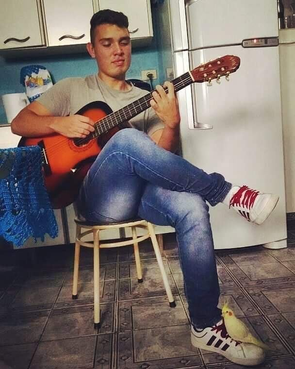
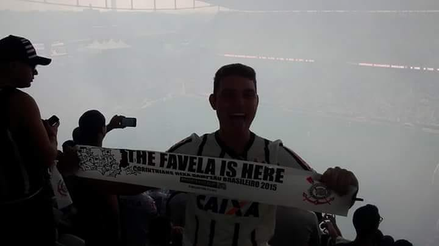
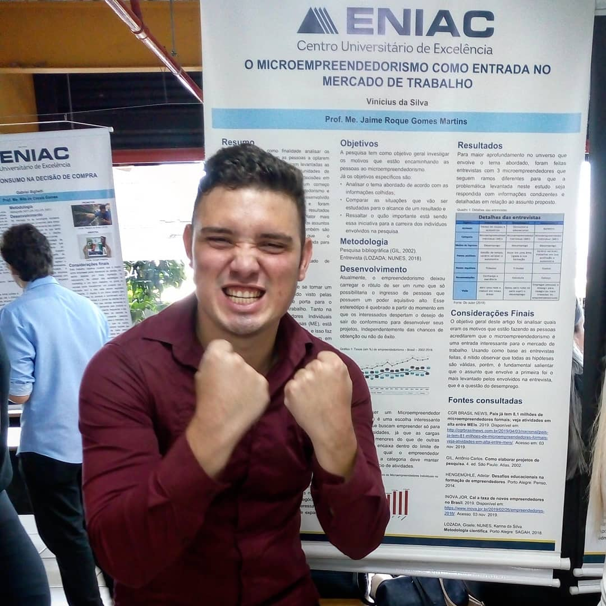
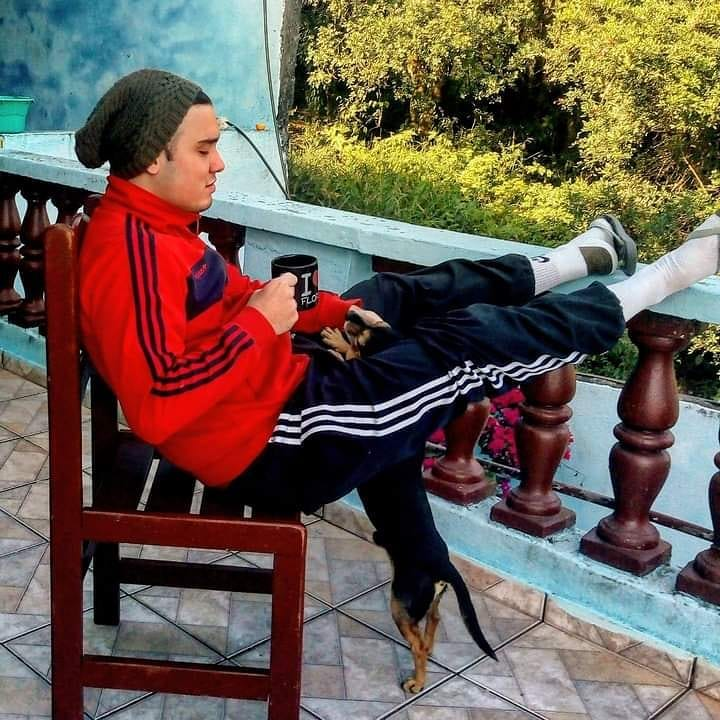

Meu nome é Vinícius, mas podem me chamar de Vinny!
Eu tenho 25 anos e moro em Santa Isabel/SP junto com meus pais.
Curiosidades sobre mim!
1 - Sou um músico de quintal!
Desde o começo dos anos 2000, quando ouvia por diversas vezes o CD do album "Meteora" do Linkin Park e também o "Nada como um dia após o outro" do Racionais Mc's, sempre tive vontade de aprender a tocar algum instrumento e navegar pelos meios músicais. Ao passar do tempo fui conhecendo novos estilos músicas e alimentado cada vez mais esse desejo de incluir a música da minha vida. Me considero uma pessoa eclética, acredito que existem músicas boas e ruins, idependente do estilo músical. Fiz um curso para aprender a tocar guitarra no início da minha adolescência e com base no que eu aprendi fui desenvolvendo habilidades com outros instrumentos com cordas como violão, ukulele, viola caipira e contra-baixo. Gosto de cantar, porém, ainda não me aprfundei sobre o estudo de canto e pretendo me aperfeiçoar no futuro.

2 - Corinthiano loucamente apaixonado!
Apesar de já amar futebol, acompanhar a conquista do penta em 2002 e ter tido o prazer de assistir os Real Madrid dos "Galáticos" darem show na TV aberta, ainda não tinha definido meu time do coração, até que um certo dia, fui na casa de um dos meus melhores amigos e a mãe dele fez um bolo super maravilhoso. Ela me disse que só deixaria comer o bolo se eu falasse que era corinthiano, ali então era mais um no bando de loucos kkkkkkk. Virei um torcedor passional do Corinthians, é um clube que eu amo de coração. Em 2005, no primeiro título brasileiro que consegui acompanhar fiz o corte de cabelo do Carlitos Tevez, que era a principal estrela do time. Tive o prazer de acompanhar a equipe no estádio também, torcer loucamente e ver ao vivo jogadores como Ronaldo Fenômeno, Roberto Carlos, Paolo Guerrero, Cassio, Emerson Sheik e outros craques! Agora o time está em má fase, mas continuo apoiando loucamente!

3 - Fascinado por conhecimento!
Sou uma pessoa com muita fome de aprendizado. Desde de pequeno sempre tive a persistência para aprender algo novo e conseguir alcançar meus objetivos. Tudo aquilo que me desafia é o combústivel para superar todos os meus limites. Durante minha adolescência tive vontade de me ingressar no mundo da TI, fiz dois cursos bem legais que me ensinaram conceitos iniciais, que foram Informática Básica e Web Design. Quando a vida adulta bateu em minha porta, veio então um dos grandes desafios da minha vida, que foi vencer a timídez. Tive que encarar logo de cara a área comercial, por incrível que pareça...Mas nada que a persistÊncia não resolva, me dei super bem na área, aprendi diversas habilidades e cheguei mais consistente para a minha próxima experiência de trabalho que foi na área da saúde. Sou formado em Administração de Empresas e hoje graças a Generation Brasil sou um Desenvolvedor Full Stack Jr à procura de um espaço no mercado de trabalho.

4 - Adoro fazer atividades físicas!
Nos últimos anos, as atividades físicas vêm sendo cruciais para me manter mais saúdavel e menos estressado com a minha rotina. Atualmente, procuro correr cerca de 40km semanais para me manter no peso ideal e também evitar problemas que vem em consequência do cedentarismo. Os exercícios mudaram a minha vida e hoje tenho uma qualidade de sono melhor, uma respiração mais controlada e também criei hábitos de diminuir o consumo de carboidratos durante o dia e estou priorizando comer mais legumes e verduras.
5 - Sou daqueles que acreditam que as pessoas ficam mais elegantes no inverno.
Sempre me senti á vontade usando meia, moletom e chinelo, principalmente no inverno kkkkk. Só procuro caprichar no visual em ocasiões importantes, não sou daqueles que se produzem todo para comprar pão na padaria ou simplesmente para pagar um boleto no banco. Gosto de rolês casuais, onde conheço grande parte das pessoas, possuo a segurança de que não vou arrumar confusão com ninguém e que tenha respeito mútuo. Adoro sorrisos, acredito que eles possuem o poder de mudar o dia de qualquer um! Como na foto ao lado, também gosto de um bom café e de animais!

6 - Sobre assistir filmes e series: Eu sempre durmo kkkk. Meu negócio é assistir novela.
Depois que o mundo dos adultos me possuiu, me desapeguei de filmes, tanto que a maioria dos que eu vi inteiro foi no cinema, porque em casa... É ZzZzzZzzZzzzzZ na certa! Algumas séries até que são interessantes, porém, viciantes e tomam muito tempo. Desde criança eu assisto muitas novelas, confesso que no momento eu dei uma pausa, mas sempre quando eu tenho oportunidade estou na sala acompanhando algumas novelas antigas pelo canal Viva junto com os meus pais kkkkk
7 - Sou um grande Fã do Dr. Socrátes, Djavan, Cavaleiros do Zodíaco, Chapolin e Zidane!